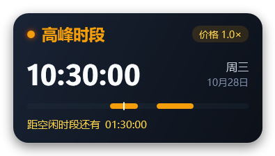
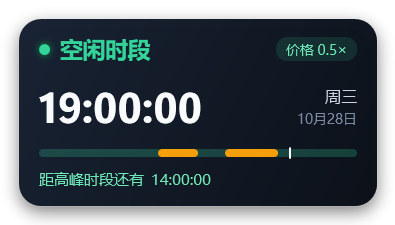

四种状态怎么判 Rules & Data
高峰只发生在“工作日且不是法定节假日”的两个时间段；其余所有时间都是空闲（价格减半）。周末和法定节假日视觉上保持青绿色系，但用 标签 + 日期 + 整条全天空闲时间轴 区分，不会和高峰的琥珀色混淆。
周一至周五 09:00–12:00、14:00–18:00，且不是法定节假日。
工作日午休 12:00–14:00、18:00–次日 09:00 等其余时段。
全天空闲。按 DeepSeek 官网字面规则，周末即使遇到“调休上班日”也算空闲。
国务院每年通知的放假日全天空闲，日期行显示节日名。
极简流光 Minimal Sheen
在现有信息结构上做“玻璃化”：一层很薄的液态玻璃、顶部一道折射高光、角落一团状态光晕。时钟是视觉主角，其余元素尽量退后。周末/节假日会在状态旁多一枚小标签，时间轴整条变成流动青绿（表示全天空闲）。取舍：视觉冲击最弱，但天天看不腻。
极光液光 Aurora Liquid
玻璃内部放两团缓慢游动的状态色光斑，外层再叠一道流光；状态文字带微光。“液态”感最强，远看像一颗会呼吸的玻璃珠。周末/节假日光斑转为青绿，状态旁加标签。取舍：浅色壁纸下对比稍弱。
灵动胶囊 Dynamic Capsule
横向玻璃胶囊：左边呼吸状态点、中间时钟、右边倒计时。占位最矮，贴在屏幕边缘几乎不挡东西。周末/节假日状态区会直接显示“周末 / 国庆节”小标签。取舍：信息量最小，日期和秒数做了弱化。
双层幻彩 Layered Prism
主玻璃里再嵌一块小玻璃片：大时钟在上，倒计时与今日时段在下；边缘是幻彩折射光，漂浮两颗小液滴。“双层玻璃”最重工；周末/节假日内层会显示“今日全天空闲”。取舍：占位略大、信息密度最高。
霜白玻璃 Frosted Light
同一套液态玻璃语言，换成明亮霜白玻璃：深色文字、彩色状态胶囊，像 iPhone 的控制中心小卡片。放浅色壁纸上非常清爽；周末/节假日用青色/金色小胶囊区分。取舍：深色壁纸下需要更强阴影支撑。
轨道玻璃 Orbit Glass
圆形玻璃表盘：外圈是 24 小时轨道，两段高峰用琥珀弧标出，白点是“现在”。周末/节假日整圈变成青绿，中心显示状态标签和“距下一个高峰”倒计时。取舍：形状与普通挂件不同、信息密度低。
怎么选？一张表对比
| 编号 | 方案 | 风格 | 信息量 | 占位 | 更适合 |
|---|---|---|---|---|---|
| 01 | 极简流光 | 克制、通透、耐看 | 完整 | 标准 | 喜欢干净、低调、长期挂着不腻 |
| 02 | 极光液光 | 动感、玻璃最“活” | 完整 | 标准 | 喜欢光影流动、桌面偏深色 |
| 03 | 灵动胶囊 | 极简横向、呼吸感 | 精简 | 最省空间 | 不想挡桌面、喜欢短横条 |
| 04 | 双层幻彩 | 层次丰富、精致 | 最多 | 略大 | 喜欢细节、想看“今日时段”提示 |
| 05 | 霜白玻璃 | 清爽、明亮 | 完整 | 标准 | 壁纸偏浅、喜欢浅色 UI |
| 06 | 轨道玻璃 | 独特、仪表感 | 精简 | 圆形 | 想要一个特别的圆形小挂件 |
参考：当时的线上版本（v1.0，已被当前版本取代）
对比用。当时的线上版本偏“工具感”，且鼠标悬停在进度条附近会弹出大段文字浮窗——后来的版本已经去掉，改为所有信息常驻；周末/节假日也补上了明确的状态标识。


本次升级固定改掉：① 悬停大浮窗 → 删除，信息常驻；② 氛围升级 → 液态玻璃、折射高光、流光与状态光晕；③ 视觉层级 → 时钟为主角，状态色克制使用；④ 补齐周末 / 法定节假日状态展示。